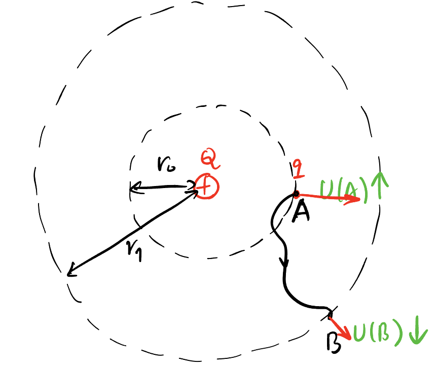
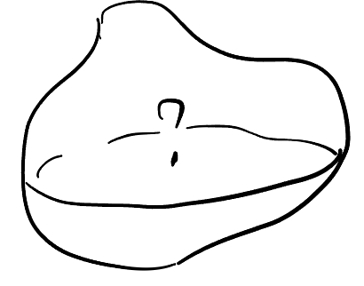
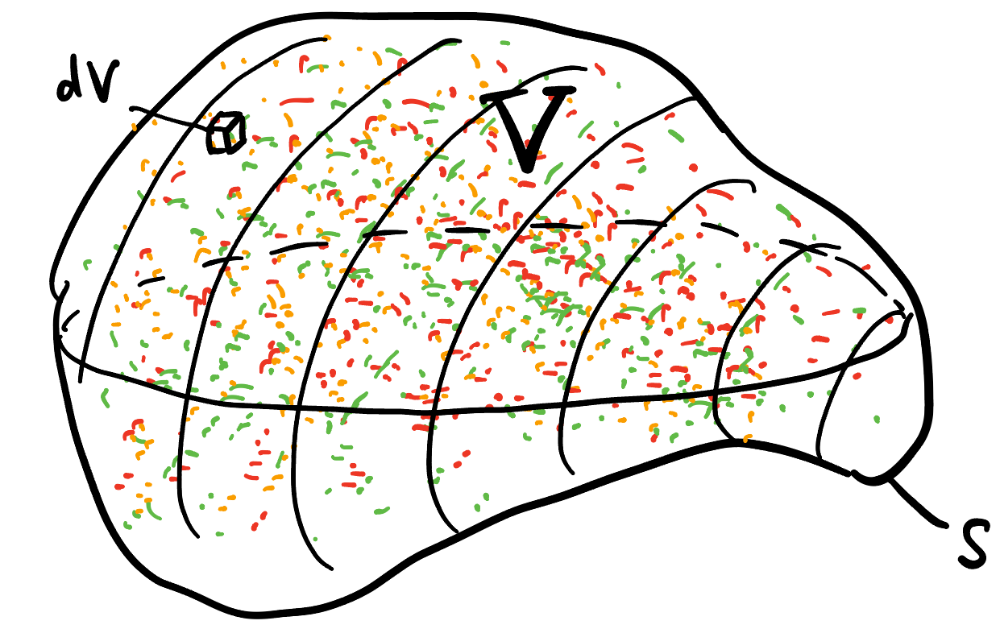

EM Chapter I: Maxwell’s First Equation
Takeaway
Changing the mindset from forces to fields.
Maxwell’s First Equation = Inverse Square + Superposition
Curl-free (conservative) property of static electric field has nothing to do with the inverse square property! (It’s because the radial direction of the field.)
1 Welcome!
This is the first chapter of my electromagnetics series. I will introduce to you the theory of electromagnetism through this series, not in the order of history, but in the order of a self-contained logic that satisfies people. The reason I did this is that history is too complicated, confusing and sometimes even wrong. One would not fully understand the trajactory of any subject (geometry, Newton’s law, General relativity, etc) without experiencing it. So I would NOT recommend you go through the tedious history of any subject but develop your own logic-complete explanation of it after reading tons of wikipedia and stackexchange, in other words, that explanation should make sense in the history in another parallel universe!
You will understand the first one of the famous Maxwell’s Equations in this blog:
\[ \begin{aligned} \mathbf{\nabla} \cdot \mathbf{E} &= \frac{\rho}{\varepsilon_0} \quad &\text{(Gauss's law)} \\ \mathbf{\nabla} \cdot \mathbf{B} &= 0 \quad &\text{(Gauss's law for magnetism)} \\ \mathbf{\nabla} \times \mathbf{E} &= -\frac{\partial \mathbf{B}}{\partial t} \quad &\text{(Faraday's law)} \\ \mathbf{\nabla} \times \mathbf{B} &= \mu_0 \mathbf{J} + \mu_0 \varepsilon_0 \frac{\partial \mathbf{E}}{\partial t} \quad &\text{(Ampère's law)} \end{aligned} \]
2 Physics World to Math World
Physics originates from observations in the real world. If you keep an eye on it, you could discover the following phenomena yourself:
The force between two charges is proportional to their charge, and inversely proportional to their distance, squared.
No isolated “magnetic charges” found in nature.
Changing magnetic flux leads to current in a circuit!
Two parallel wires attract or repel each other when current is applied!
These four observations leads to the four equations by Maxwell.
3 Integral Form of Maxwell’s First Equation
3.1 Inverse Square Law
According to observation 1, we could write1: \[ F \propto \frac{Qq}{r^2}, \] or in an equation: \[ \boxed{ F = k \frac{Qq}{r^2}, } \]
1 Non-bold-face letters (\(F\)) are scalars, bold-face letters (\(\mathbf{F}\)) are vectors.
2 The unit of charge (Coulomb) is defined in the following way (The reason Ampere are defined first is because Ampere happens to be one of the base unit of SI): - Current: Ampere (I: A): First we define Ampere (surprise!) to be the intensity of current on two ideal wires that are 1 metre apart and produces a force of \(2 \times 10^{-7}\) N between them (1N is defined to be the force that makes an object of mass 1kg moves at the acceleration of \(1\text{m}/\text{s}^2\)) - Charge: Coulomb (Q: C): Then we define Coulomb to be the amount of charge the that passes through a point with a current of 1A over 1 second.
where \(k\) is a constant, \(Q\) and \(q\) are the amount of charge2 on two small objects, \(r\) is their distance.
3.2 Conservative Property
Let’s consider the work done when we fix \(Q\) and gradually move \(q\) in a certain path. Since the force from \(Q\) to \(q\) is always radially from \(Q\), it turns out that the work done only depends on the initial and final position of \(q\) regardless of the moving process in between! We say a force like this Conservative3. We would like to think that there is a number \(U\) attached at every spatial point around \(Q\) such that the the work done from point \(A\) and \(B\) is just that \(U(A)-U(B)\)4, i.e., \[ W_{AB} =: U(A) - U(B). \]
3 It’s worth noting that conservativity has nothing to do with the inverse square property. The potential energy of hypothetical “inverse force” and “inverse cubic force” are: \[ U_{\frac{1}{r}} = -kQq \ln r, \] and \[ U_{\frac{1}{r^3}} = \frac{kQq}{2} \frac{1}{r^2}. \]
4 Why not \(U(B)-U(A)\)? Because we want the quantity \(U\) also indicates the tendancy that \(q\) would move. More likely to move, \(U\) should be larger.

5 Actually, should be \(U(r) = -k \frac{Q}{r} + \operatorname{const}\). But when \(r \to \infty\), we expect \(U\) to be \(0\) because \(q\) do not have the ability to do work.
\(U(r)\) is called the potential energy at \(r\). We claim5 that \[ \boxed{ U(r) = -k \frac{Qq}{r}, } \] because \[ W_{AB} = \int_{A \to B} \mathbf{F} \cdot \mathbf{\mathrm{d}r} = \int_{r_0}^{r_1} k \frac{Qq}{r^2} \mathrm{d}r = -k \frac{Qq}{r_1} - k \frac{Qq}{r_0} =: U(A) - U(B). \]
Therefore, the work done is just the difference of \(U\) with a negative sign: \[ W_{AB} = - \Delta U. \]
We also know that
\[ \mathrm{d} W_{AB} = \mathbf{F} \cdot \mathrm{d} \mathbf{l} = F \cdot \mathrm{d} l_\parallel, \] where \(\mathrm{d} \mathbf{l}\) is a small displacement and \(\mathrm{d} l_\parallel\) is the length of the projection of that small displacement onto the direction of \(\mathbf{F}\), i.e., the direction of \(\mathbf{\nabla} U\), reversed. Hence, \[ F = \frac{\mathrm{d} W_{AB}}{\mathrm{d} l_\parallel} = - \frac{\mathrm{d} U}{\mathrm{d} l_\parallel}. \]
In vector notation, \[ \boxed{ \mathbf{F} = - \mathbf{\nabla} U. } \tag{1}\]
3.3 Get Rid of Test-charge
When \(q\) is far smaller than \(Q\), it is called a test charge, which is used to “test” the effect of \(Q\) to its surroundings and minimize other interference. It is naturally to get rid of \(q\) and define a quantity \(E\) that only depends on \(Q\), we expect that \(E\) satisfies: \[ \mathbf{F} =: \mathbf{E} q, \] where \(E\) obviously equal to: \[ \boxed{ E = k \frac{Q}{r^2}. } \]
We call \(E\) the electric field generated by \(Q\)6.
6 Since \(\mathbf{E}\) is equivalent to force (just up to a constant), all properties of \(\mathbf{E}\) is inherited from \(\mathbf{F}\), such as vector property, superposition, conservativity, etc.
Therefore, Equation 1 could be written as: \[ \mathbf{E}q = - \mathbf{\nabla} U. \tag{2}\]
We could also get rid of \(q\) in Equation 2 by defining a quantity \(V\) called the (Electric) potential generated by \(Q\): \[ \boxed{ U := Vq, } \] so we have \[ \mathbf{E}q = -\mathbf{\nabla} V q \] \[ \implies \boxed{ \mathbf{E} = - \mathbf{\nabla} V. } \tag{3}\]
You can compare Equation 1 and Equation 3, the latter is test-charge-free version of the former!
This mindset from force to field is extremely important! “Field” originates from “force” but later evolves independently from it, as you will see. Thinking in terms of “fields” rather than “forces” is a key factor that distinguishes beginners from experts. Now you have evolved to the second level – make “fields” be your second nature!
3.4 An Interesting Question
How to know how many charges inside some closed region?

Proposition 1 The charge inside some closed surface \(S\) can be calculated by only looking at the field sitting on its surface7: \[ \text{Flux} \propto Q_{\text{in}}, \] where the flux \(\Phi\) is defined: \[ \Phi := \oiint_S \mathbf{E} \cdot \mathrm{d} \boldsymbol{A}. \]
7 This claim directly comes from the inverse square law and superposition principle of fields.
Solution 1.
We will consider the case then there is only one point charge \(q\) inside \(S\).
Consider a sphere \(R\) of radius \(r\) around \(q\) in Figure 1, it’s obviously that the flux through \(R\) does not related to \(r\), because the surface area increases at the rate of \(r^2\) and the field decays at the rate of \(1/r^2\). Just to be intimidating, \[ \Phi_R = \oiint_R k \frac{q}{r^2} dA = k \frac{q}{r^2} \cdot 4 \pi r^2 = 4 \pi k q \propto q. \]
We commonly let \[ \boxed{ k = \frac{1}{4 \pi \epsilon_0} } \tag{4}\] to simpify8 Equation 4 to be \[ \Phi_R = \frac{q}{\epsilon_0}. \]
8 We introduce the symbol \(\epsilon_0\) by the motivation to eliminate the “\(4 \pi\)” Equation 4. But the meaning of \(\epsilon_0\) would be clear later until we introduce the electric fields in matter. Don’t worry.
Now we claim that \[ \Phi_R = \Phi_S, \] where \(S\) is an arbitrary closed surface outside \(R\).
Again we use the inverse square property, the flux through \(\mathrm{d}R\) should be same as the flux through the blue circle in Figure 1. Plus, the flux through the blue circle is exactly the same as the flux through \(\mathrm{d}S\) as shown in Figure 2 (since their “perpendicular” surface area are the same)
We then use superposition property of fields to obtain the equation of multiple charges enclosed.
Suppose there are \(N=3\) point charges inside \(S\) as shown in Figure 3, the total flux is
\[ \Phi = \oiint_S \mathbf{E} \cdot \mathrm{d} \mathbf{A} = \sum_{i = 1}^3 \left(\oiint_S \mathbf{E}_i \cdot \mathrm{d} \mathbf{A}\right) = \sum_{i = 1}^3 \frac{q_i}{\epsilon_0} = \frac{Q_{\text{in}}}{\epsilon_0}. \tag{5}\]
Of course Equation 5 can be generalized when \(N\) is arbitrary. And ura! We have just proof the integral version of Maxwell’s first equation! \[ \boxed{ \oiint_S \mathbf{E} \cdot \mathrm{d} \mathbf{A} = \frac{Q_{\text{in}}}{\epsilon_0}. } \tag{6}\]
This is also known as Gauss’s Law. Equation 6 holds for any closed surface \(S\).

4 Differential Form of Maxwell’s First Equation
The charges in the real world are not commonly appears like an infinitesimal point. They distributed evenly through a body instead of concentrate on a point of no size. Therefore, \(Q_{\text{in}}\) on the RHS9 of Equation 6 could be write as an integral: \[ \frac{Q_{\text{in}}}{\epsilon_0} = \iiint_V \frac{\rho}{\epsilon_0} \mathrm{d}V, \] where \(V\) is the region enclosed by \(S\), \(\rho\) is the density10 of charges at some place inside \(S\).
9 Right hand side.
10 In the case of point charges, this density if infinite. Mathematicians use so-called \(\delta\)-function to describe the behaviour of this kind of “degenerated” density. It is not a function, just a symbol following some rules that deals with the Mathematical OCD that forces the form of a certain integral unchanged when some mass is concentrated on a small point.

What about the LHS of Equation 6? We expect it to be also written in a kind of volume integral to cancel it out with the RHS: \[ \oiint_S \mathbf{E} \cdot \mathrm{d} \mathbf{A} = \iiint_V \boxed{???} \mathrm{d}V. \]
And then \[ \iiint_V \boxed{???} \mathrm{d}V = \iiint_V \frac{\rho}{\epsilon_0} \mathrm{d}V \tag{7}\] holds for any11 volume \(V\), so we can claim that \[ \boxed{???} = \frac{\rho}{\epsilon_0}. \tag{8}\]
11 Any is very important! Without any, we cannot derive Equation 7 from Equation 8.
12 Also denoted \(\mathbf{\nabla} \cdot \mathbf{E}\).
Luckily! Stoke’s Theorem tells us \[ \boxed{???} = \operatorname{div} \mathbf{E}. \] For those of you not familiar with multivariable calculus, \(\operatorname{div} \mathbf{E}\) is called the divergence12 of \(\mathbf{E}\), which is a scalar-valued function purely derived from \(\mathbf{E}\).
Finally! We got the differential form: \[ \boxed{ \operatorname{div} \mathbf{E} = \frac{\rho}{\epsilon_0}. } \tag{9}\]
5 Thinking Problem
Exercise 1 Think about what properties of \(\mathbf{E}\) ensures that Equation 9 holds true?
Solution 2. There are only two properties of electric fields that are used to obtain Equation 9:
- Inverse square
- Superposition
Stoke’s Theorem don’t count because it holds for any vector fields.
Superposition is trivial. The non-trivial part is inverse square. This property ensures that we can extend the sphere to an arbitrary surface in Figure 1. What is the nature of inverse square?
Well, we live in 3-dimensional space. Everything that spreads should somehow decay at the rate of \(1/r^2\), like light, gravity, sound, etc. Otherwise it will against the conservation of energy. In general, if we live in a \(N\)-dim world, fields should naturally decay at the rate of \(1/r^{N-1}\). In other words, everything in \(N\)-dim world should decay at the rate of “area” decay. This paper by myself delved a little deeper inside this inspiration.